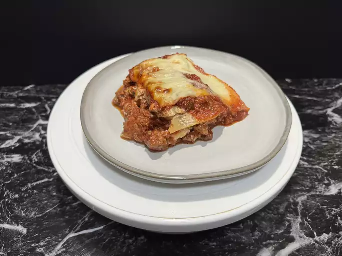

Back to Recipes
Lasagna Recipe

Making perfect homemade lasagna doesn’t have to be tedious.
This top-rated easy lasagna recipe comes together quickly with a relatively short ingredient list.
That said, it’s absolutely possible to make a lasagna that’s both delicious and easy to prepare.
Ingredients
- Beef
- Spaghetti sauce
- Cheese
- Eggs
- Seasonings
- Lasagna noodles
- Water
Steps to follow:
- Cook and drain the ground beef, then stir in the spaghetti sauce and simmer
- Combine the cottage cheese, 2 cups of mozzarella, eggs, half of the Parmesan, and Seasonings
- Assemble the lasagna according to the detailed recipe.
- Bake, covered, for 45 minutes.
- Uncover and continue baking for 10 minutes.
What to Serve With Lasagna
- Garlic Bread
- Salad
- Roasted Vegetables
- Garlic Roasted Broccoli
- Antipasto Salad